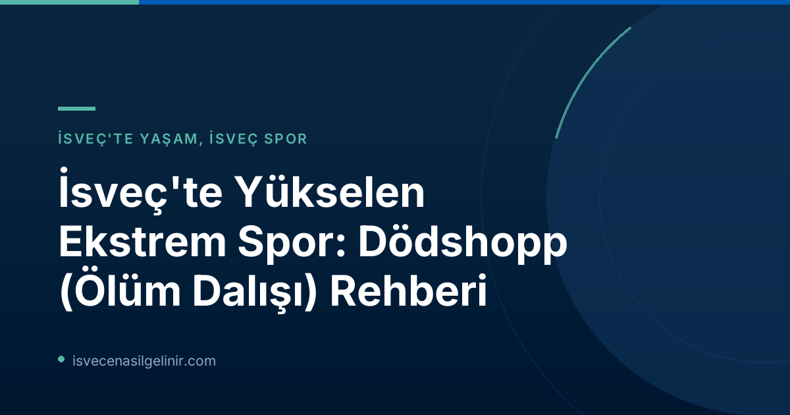

Dödshopp Nedir ve Nereden Geliyor?
Dödshopp, kelimenin tam anlamıyla "ölüm dalışı" anlamına gelen, Norveç kökenli bir ekstrem spordur. Bu sporun temelinde, yüksek bir noktadan (genellikle bir platform veya falez) suya atlarken, son saniyeye kadar vücudu açık bırakıp, suya çarpma anından hemen önce toparlanarak "magplask" (karnın üstüne düşme) görüntüsü vermeden suya girmek yatar. Bu kontrollü serbest düşüş ve anlık toparlanma, hem estetik hem de yüksek bir adrenalin vadediyor.
Dödshopp, 1980'li yıllarda Oslo'daki Frognerbadet yüzme havuzunda bir grup arkadaşın eğlenceli bir "havuz oyunu" olarak başladı. O günden bu yana, basit bir eğlenceden küresel bir fenomene dönüştü. Dödshopp sporcusu Viktor Jonsson, bu hissi "Üçlü espresso ve soğuk bir duş gibi. Biraz deli olmak iyi bir şey," sözleriyle özetliyor. Yarışma organizatörü Adam Widén ise, "Stockholm'de eğlenceli bir şey olarak başladı ve ilk yıldan sonra giderek daha da büyüdü," diye ekleyerek sporun hızla yayıldığını belirtiyor.
Dödshopp'un Hızlı Yükselişi: Viral Faktör
Dödshopp'un dünya çapında tanınmasında ve özellikle gençler arasında popülerleşmesinde sosyal medyanın etkisi büyük. Kendi atlayışlarını çekip düzenleyen genç sporcular, kısa sürede internet fenomeni haline gelerek binlerce takipçiye ulaştı. Bu viral videolar, sporu sadece Norveç ve İsveç sınırlarının dışına taşımakla kalmadı, aynı zamanda geniş kitlelere ulaştırdı.
Norges Døds Diving League'in (Norveç Ölüm Dalışı Ligi) kurulmasıyla birlikte Dödshopp, uluslararası yarışmalar, dünya sıralamaları ve süperstarlarla profesyonel bir yapıya kavuştu. Binlerce izleyicinin katıldığı bu etkinlikler, sporun görünürlüğünü ve prestijini artırdı.
İsveç'te Dödshopp: Şampiyonalar ve Yükseklikler
İsveç de Dödshopp trendine kayıtsız kalmadı ve kendi ulusal şampiyonalarını (SM) düzenlemeye başladı. İsveç Şampiyonası'nda atlayışlar genellikle 12 metrelik platformlardan yapılıyor. Görüldüğü üzere, bu spor sadece cesaret değil, aynı zamanda ciddi bir fiziksel hazırlık ve vücut kontrolü gerektiriyor.
Adam Widén, "Herkes gelip 12 metreden atlayamaz, atletik ve vücut kontrolü iyi insanlar olmalı. İniş serttir ama iyi yapılırsa dalış gibi olur," diyerek sporcuların yetenek seviyesine dikkat çekiyor. Bu, Dödshopp'un sadece rastgele bir atlayış olmadığını, aksine özenli bir antrenman ve disiplin gerektiren bir spor olduğunu gösteriyor.
Güvenlik Her Şeyden Önce Gelir: Kurallar ve Riskler
Ekstrem sporlarda güvenlik her zaman önceliklidir. Dödshopp da yüksek riskler barındırdığı için sıkı güvenlik kuralları ve uygulamalarla gerçekleştirilmelidir. Norges Døds Diving League, sporcuların güvenliğini sağlamak amacıyla çeşitli tavsiyelerde bulunur ve yarışma ortamlarında belirli limitler uygular.
Dödshopp Güvenlik Kuralları ve Limitleri
- Eğitim ve Antrenman Yüksekliği: Dödshopp Ligi, antrenmanlarda 10 metreden daha yüksek platformlardan atlanmamasını tavsiye eder.
- Yarışma Maksimum Yüksekliği: Resmi yarışmalarda izin verilen maksimum atlayış yüksekliği 13 metredir.
- Su Derinliği: Atlama yapılacak bölgenin yeterince derin olduğundan emin olunmalıdır.
- Refakatçi: Her zaman yanınızda bir refakatçi veya gözlemci bulunması önemlidir.
Ancak, her ne kadar resmi yarışmalar ve ligler güvenlik önlemlerini sıkı tutsa da, internette paylaşılan bazı videolarda sınırların zorlandığı ve risklerin göz ardı edildiği görülmektedir. Örneğin, 21 yaşındaki Vali Graham'ın Avustralya'da 42 metrelik bir şelaleden yaptığı atlayış, bilinç kaybı ve ciddi yaralanmalarla sonuçlandı, ancak Graham mucizevi bir şekilde hayatta kaldı. Bu tür olaylar, Dödshopp'un potansiyel tehlikelerini açıkça ortaya koymaktadır.
Riskli yapısına rağmen, Dödshopp'un kuralları ve güvenlik protokolleri sıkı bir şekilde uygulanır. İsveç Vatandaşlık Sınavı'nı geçmek gibi önemli adımlar atarken de benzer bir titizlik ve hazırlık gerektiğini unutmamak önemlidir.
Dödshopp sporcusu Viktor Jonsson'un dediği gibi, "Yine de biz normal insanlarız, yürüyüş yapmayı ve kahve içmeyi severiz." Bu, sporcuların ekstrem sporların dışındaki hayatlarında da sıradan insanlardan farksız olduğunu vurguluyor.
Dödshopp Yarışma Formatları ve Puanlama
Dödshopp yarışmaları iki ana kategoriye ayrılır:
Klasik Atlama
Bu kategoride, sporcular daha basit hareketler sergiler ve tam rotasyonlar yapmazlar. Odak noktası, kontrollü bir şekilde atlayışı başlatmak ve son anda vücudu toplayarak pürüzsüz bir iniş yapmaktır.
Serbest Stil (Freestyle)
Serbest stil, adından da anlaşıldığı gibi daha fazla yaratıcılık ve akrobasi içerir. Bu kategoride rotasyonlar zorunludur ve "grabs" (atlayıcının havada vücudunun farklı bölgelerini tutması) gibi çeşitli trickler serbesttir. Sporcular, atlayışlarına kendi kişisel tarzlarını ve zorluk seviyelerini katarlar.
Puanlama Alanları
Hakimler, Dödshopp yarışmalarında sporcuların performansını dört ana alanda değerlendirir:
- Ansats (Atlayış Öncesi Hazırlık): Atlama platformundaki duruş, koşu veya başlangıç hareketinin kalitesi.
- Airtime (Havada Kalma Süresi): Sporcunun havada ne kadar süre kaldığı ve bu süreyi nasıl kullandığı.
- Landning (Suya İniş): Suya çarpma anında vücudun ne kadar kontrollü toplandığı ve sıçramanın miktarı.
- Helhetsintryck (Genel İzlenim/Stil): Atlama sırasındaki kişisel tarz, yaratıcılık ve genel estetik görünüm.
Bu detaylı değerlendirme sistemi, Dödshopp'un sadece yüksekten atlama değil, aynı zamanda ciddi bir spor disiplini olduğunu ortaya koymaktadır.
Referanslar
- SVT Nyheter Inrikes: De hoppar dödshopp – extremsporten som pressar gränserna
- İsveç Vatandaşlık Bilgileri: sverigemedborgarskapsprov.com
İsveç'e Adım Atın ve Yeni Kültürleri Keşfedin!
Dödshopp gibi İsveç'in benzersiz kültürel ve sportif etkinliklerini deneyimlemek ister misiniz? İsveç göçmenlik süreçleri, oturum izinleri ve vatandaşlık başvuruları hakkında güncel ve doğru bilgilere ulaşmak için bize danışın. Hayallerinizdeki İsveç yaşamına bir adım daha yaklaşın.